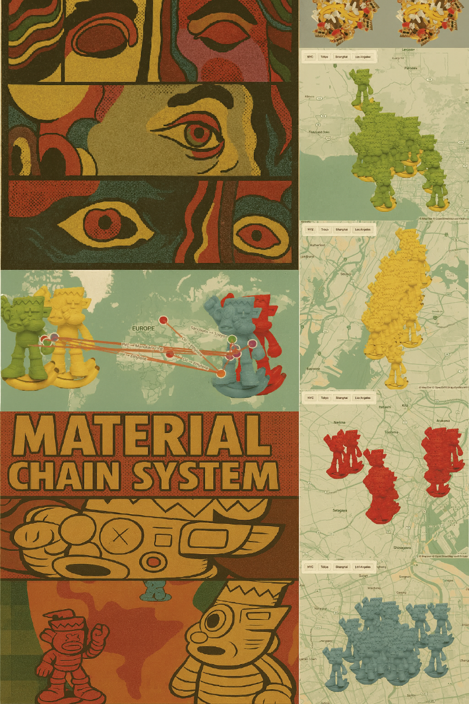
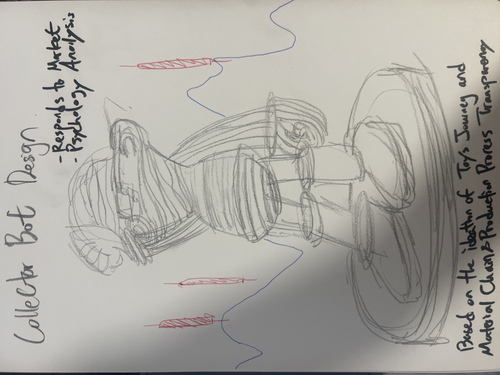

Vertical Drawing

Material-Spatial Gesture
For my final project, I haven't yet decided whether I want the work to exist in digital or physical form.
If executed digitally, it will take the form of a painting or illustration that visualizes the volatility of market dynamics in art collectibles, inspred by Sarah Meyohas.
If approached physically, I intend to work with plastic materials to embody these dynamics in tangible, sculptural form.
